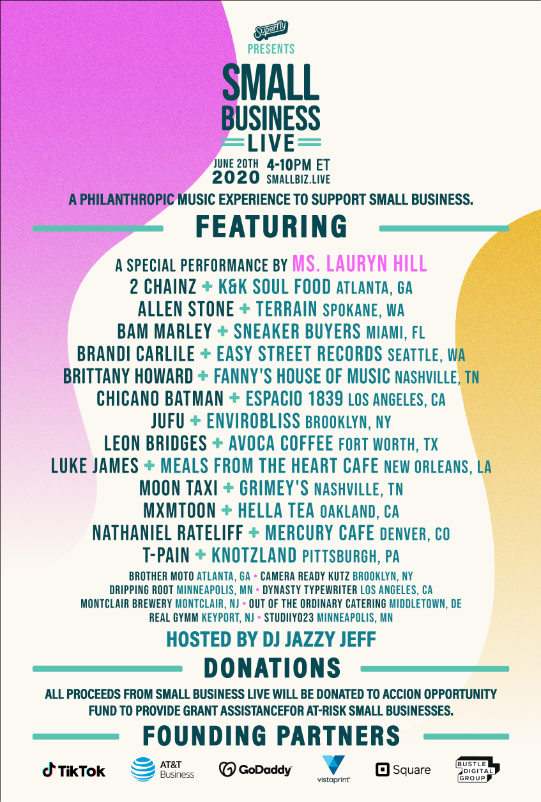
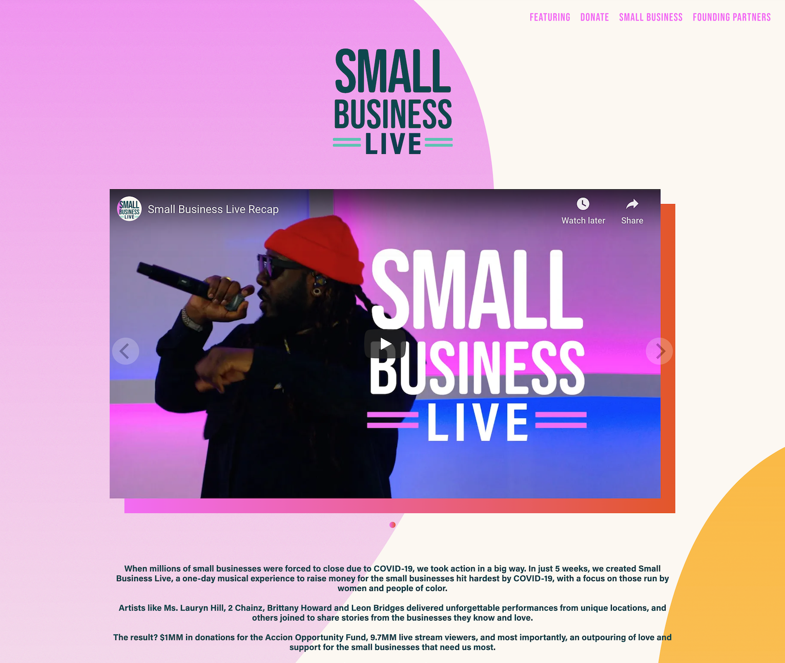

Small Business Live was a live-stream fundraiser created by Superfly in collaboration with TikTok, Square, and numerous celebrities and businesses in 2020.
It featured artists including Ms. Lauryn Hill, 2 Chainz, and Brittany Howard performing at small businesses across the US.
As a Creative, Associate Producer and Researcher on the project, I helped to conceptualize and create video packages to air on the show. This involved curating artists, songs, small businesses, celebrities, and TikTok talent. I then wrote talent pitches, and reached out to artist- and region-specific businesses to be featured on the show.
My creative duties included writing video scripts and interview questions for hosts and celebrity talent including DJ Jazzy Jeff and comedian Naomi Ekperigin. I also wrote tag lines, on-air promotions, and website copy for the event and its partner organizations.
The one-day event attracted 9.7 million live-stream viewers and it raised $1 million in donations for the small businesses hit hardest by COVID-19, with a focus on those run by women and people of color.

